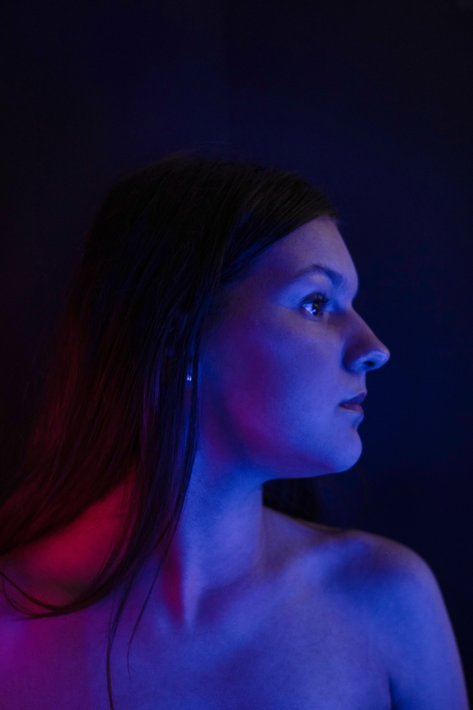
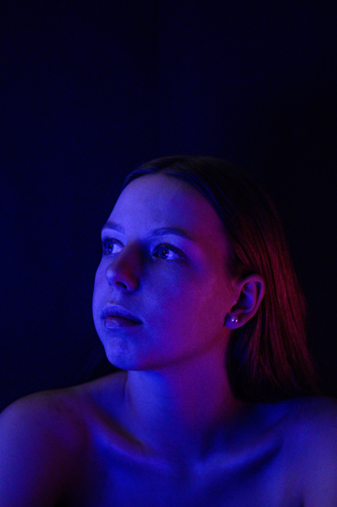
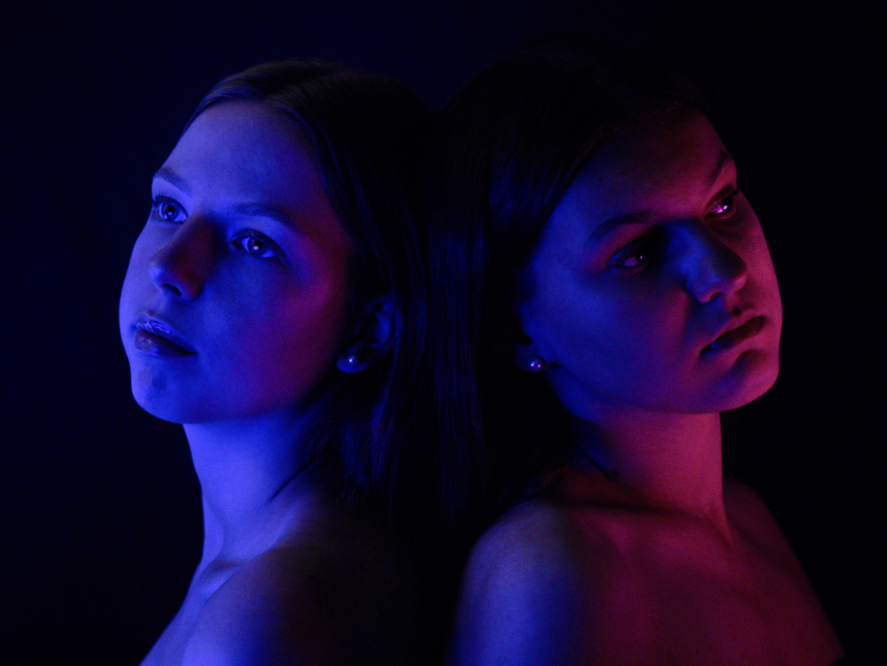

Dual-Tone Studio Portrait Series
An experimental portrait series created during the HTL Braunau media week — exploring complementary color gels, low-key lighting ratios, and sculptural rim-light choreography.

Lighting Concept & Color Temperature
The goal of this studio session was to sculpt facial contours purely through intense, complementary color temperatures on a black void backdrop.
We set up a cross-lighting rig featuring a deep cobalt blue key light opposed by a vibrant magenta-crimson rim light, shaping sharp highlights along jawlines and cheekbones without washing out natural skin textures.
Collaborative Studio Practice
Conducted as a hands-on workshop, team members rotated between setting light angles, measuring exposure values with softbox grids, and modeling.
This collaborative switch allowed fine-tuning light spill and reflection angles in real time to capture both solitary focus and dramatic dual-subject symmetry.


